Commit e16a4ab on fm/games-coop-b-s1 (this worktree) · Deployed to game-night-91464.web.app · Hosting deploy ✔
| Ask | Shipped |
|---|---|
| Two rounds only — P1 disarms R1, P2 disarms R2, game completes | YES — match = Bomb 1 + Bomb 2, Tech swaps after Bomb 1, result card shows MATCH WON / MATCH LOST at 2/2 |
| Difficulty at start → different module counts, harder per level | YES — EASY = L1 / 3 modules / ≤4 wires / 3:00 · NORMAL = L3 / 4 modules / ≤6 wires / 3:00 · HARD = L5 / 4 modules / ≤6 wires / 2:30. One pick locks both bombs. |
| New modules (PRD: SWITCHES, DIAL, LOCKWORD, CIRCUIT, SIGNAL, VENT) | SWITCHES shipped (5-LED switchboard + COMMIT, solver + device + manual + rules + tests). DIAL/LOCKWORD/CIRCUIT/SIGNAL/VENT remain phased work per PRD (est. 5–7d + 6–8d). |
| Safety | generatorVersion gate (v1 rooms keep climb/hold ladder), rules validate level/difficulty/versions, 34 unit + 6 rules tests green, lint 0 errors, build ✔ |
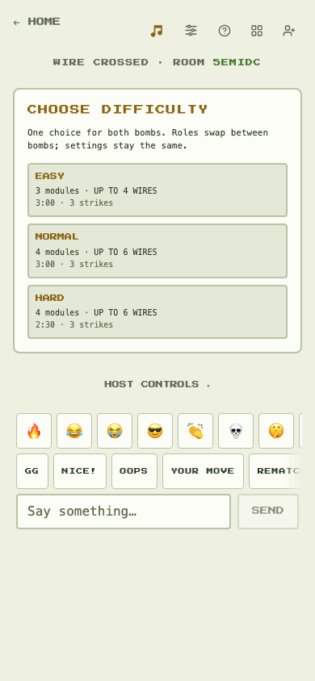
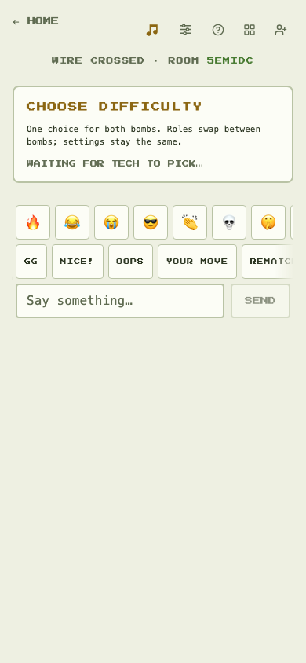
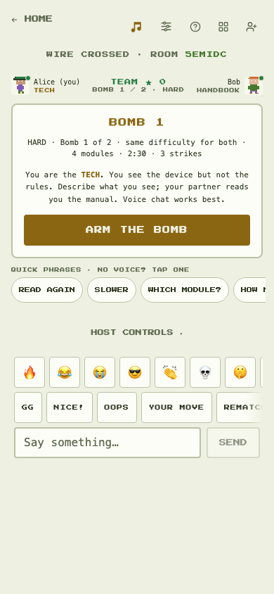
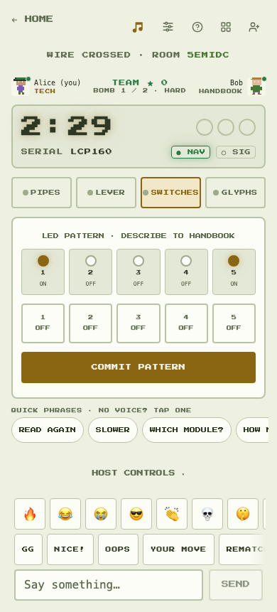
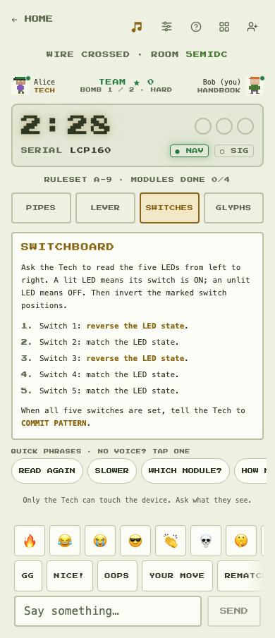
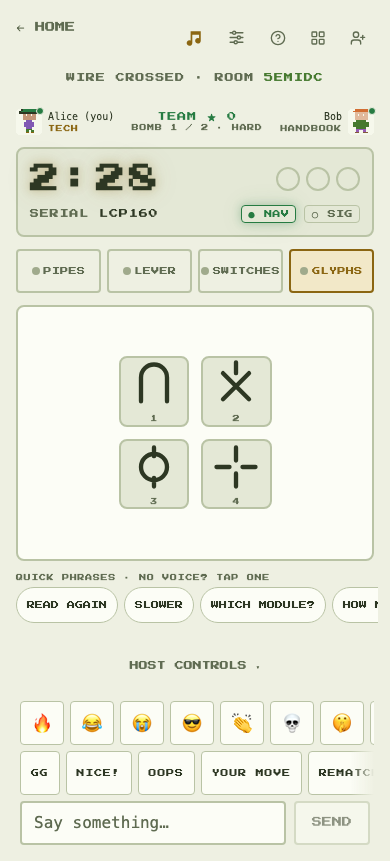
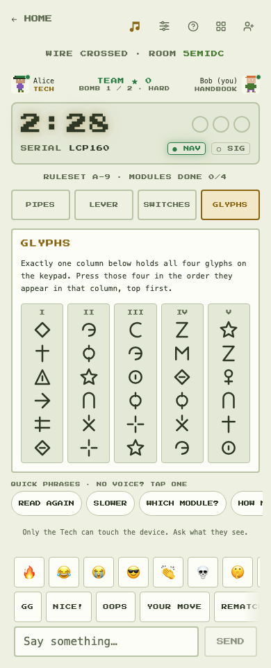
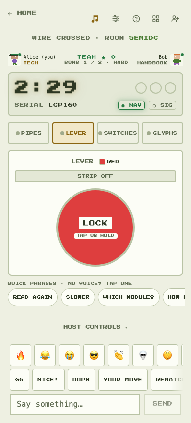
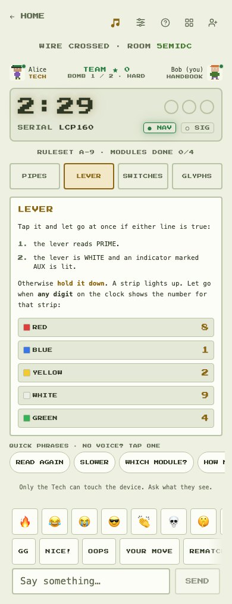
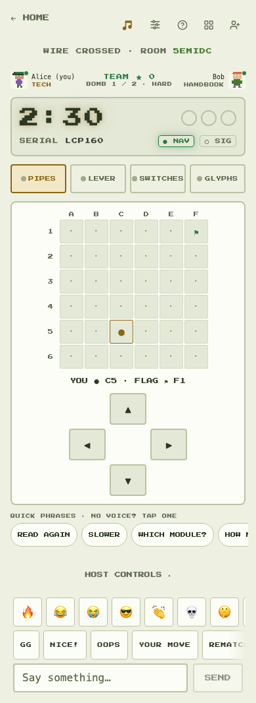
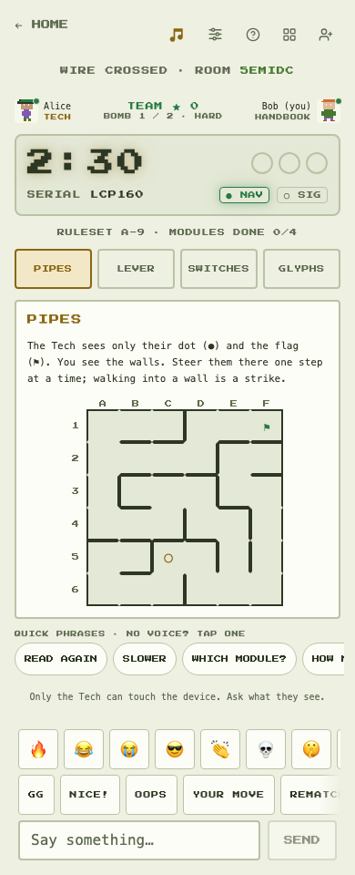
Open game-night-91464.web.app → create WIRE CROSSED room → invite second player (incognito/private window — same-browser tabs share uid) → Tech picks difficulty → ARM → defuse Bomb 1 → SWAP ROLES · NEXT BOMB → Bomb 2 → MATCH WON/LOST.
Screenshots: Playwright e2e on emulators, 390×844, this commit. Full PRD ladder (15 levels + Endless + DIAL/LOCKWORD/CIRCUIT/SIGNAL/VENT) is documented in docs/prds/wire-crossed-levels.md as phased follow-ups.